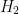
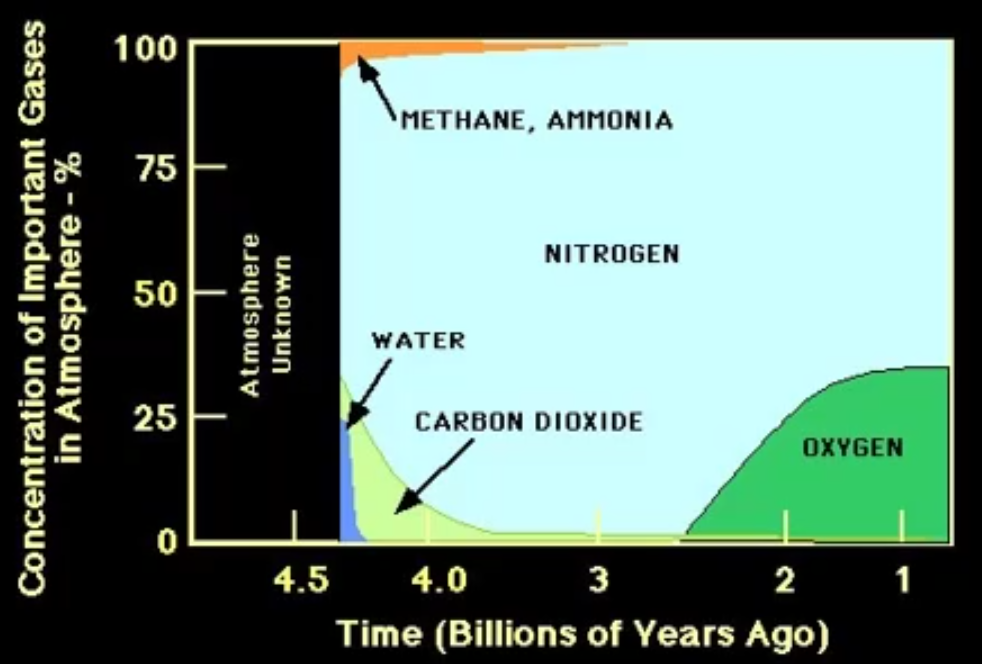

Hadean
Created Thursday 14 January 2021
@GEOLOGY @PQS @YEAR2
Major developmental features in the @Hadean:
@Zircon @Detrital
| Development | Evidence |
|---|---|
| Atmosphere | |
| Liquid water & Stable oceans | Detrital zircon crystals |
| Crust and early continents | |
| Primitive tectonics | |
| Magnetic Field | |
| Life | None at all (yet) |
Heat Transfer
3 sources of heat drove the early earth:
- @accretion (Graviational potential energy → kinetic → heat)
- @Planetary_differentiation (Light material floats to the top of the @mantle and the heavier material falls to the core. Gravitational energy as above)
- @radioactive_decay → thermal energy
3 ways heat escapes:
- @convection
- Conduction
- Radiation
Hadean Surface:
- Dominated by the heavy bombardment phase
- Evidence is lacking on Earth because the @craters haven't survived → use the @moon instead where the craters are preserved
- Bombardment → massive magma ocean → solidified & formed crust → @degassing
The first crust was made of @komatiite (a dense, ultramafic and uniform rock)
Hadean Atmosphere:
- A weak @reducing_environment
- No oxygen until 2.4 Ga
Earth may have had 3-4 different atmospheres:
- Light hydrogen and helium captured from a @nebula was quickly lost
- Present atmosphere was formed when hydrous minerals were accreted and outgassed from @volacnoes (and the volatiles were returned by @comets
(Ammonia)(vapour)
3: Same atmosphere modified by the presence of life
Reconstructions
One reconstruction of many⬇️

Emtpy/ unknown: atmosphere 1.0
- Drop in water vapour: Earth was cooling → condenstation → rain → oceans → ↓ vapour
- Drop in CO2: chemical weathering → dissolved in liquid water as carbon sink
- Drop in @methane : Evolution of @photosynthesis using CO2 to build organic components → release O2 and turns into CO2 . Replaces powerful greenhouse gas with a less potent one.
- The rise in O2 oxidised the methane and caused a global ice age at the @Archean : @proterozoic boundary
- Rise in O2: rise of atmosphere 3.0. There is a delay in the oxygen because it is used first to rust iron rich minerals and produce @BIFs
Evidence for lack of oxygen:
No rusty minerals
Presence of pyrite and Uranite comglomerates which usually oxidise quickly
Carbon rich rocks
Hadean Climate:
The warming effect of methane was limited by the formation of @organic_haze
There are processes that affect the @Oxygen_isotope_analysis
- Isotopes in the water before carbonate minerals are precipitated. O16 is stored in the ice caps (see Proxies:Isotopes) → Carbonates precipitated when there is more ice are enriched in O18.
- Salinity: Freshwater is more enriched in O16 than saltwater.
- Temperature: warmer water → O16 enriched
- Mineral Phases: Aragonite and Mg Calcite are enriched in O18 ≠ calcite
- The @Vital_Effect : the istopes precipitated by living things are not always in equilibrium with the isotopes in the seawater because of the metabolic processes that have happened. Critters from the same habitat are closer to @isotoopic_equilibrium than others (and smaller ones are closer than big ones)
- @Diagenetic_overprint can obliterate environmental data in geological record. @diagenesis (see Minerals Rocks and Fossils:Sedimentology). Fluids carry the lighter isotopes away → must make sure that rocks for study are free from diagenesis.
Cherts:
@chert is another mineral which contains oxygen that can have its @isotopes analysed. Silicon isotopes can be used too.
Data from cherts shows that the temperature 3.3Ga was 70°C (not a typo!)
Some way that it stayed hot until the @Devonian but there were @glaciers during this period.
Issues for a hothouse early earth:
@dim_young_sun → ↓ energy input → hard to make so hot
Can be compnstaed for by having more greenhouse gases @greenhousegas
The isotope data shows that it was always hot, but this is not true.
Solutions for the contradictions:
- The isotopic composition of seawater is caused by the interaction of water and @Mid_Ocean_ridge / hydrothermal vents. This could have formed cherts.
- Oxygen isotope chemistry of the oceans has changed over time